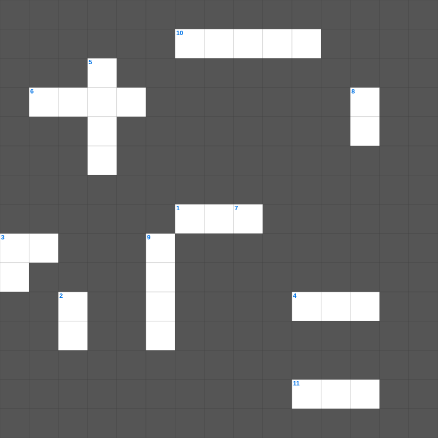

요한복음: 니고데모와 사마리아 여인
📌 서비스 정의
십자가로세로는 교회 주보와 주일학교에서 사용할 수 있는 성경 기반 가로세로 퍼즐 서비스입니다. 성경 인물, 사건, 핵심 구절을 바탕으로 제작되었습니다. 온라인 풀이 및 인쇄 기능을 제공합니다.
요한복음를 주제로 한 요한복음 가로세로 퀴즈입니다. 12개의 단어를 맞춰보세요! 가로세로 낱말 퍼즐 형식으로 요한복음의 핵심 내용을 재미있게 복습할 수 있습니다.

📝 가로 힌트
1. 세상 죄를 지고 가는 하나님의 이것
3. 물을 포도주로 바꾸신 기적의 장소
4. 나를 믿는 자는 죽어도 이것하겠고
6. 하나님이 세상을 이처럼 이것하사
10. 베드로에게 세 번 하신 질문
11. 부활 후 디베랴 호수에서 만나주신 제자
📝 세로 힌트
2. 의심 많았던 제자
3. 나는 참 포도나무요 너희는 이것이라
5. 말씀이 육신이 되어 우리 가운데 이것하시매
7. 내 어린 이것을 먹이라
8. 태초에 계셨던 이것
9. 사람이 물과 성령으로 이것하지 아니하면
🧑🏫 교회 교육 자료 활용
이 퍼즐은 주일학교 교재 추천 자료로 활용할 수 있고, 주일학교 주보에 넣기 좋은 분량으로 구성되어 있습니다. 수업용 주일학교 교안에 활동지로 붙이거나, 예배 후 복습용 주일학교 공과교재로 바로 사용할 수 있습니다.
🏷️ 키워드
요한복음 가로세로 퀴즈, 요한복음, 십자가로세로, 성경퀴즈, 말씀퀴즈, 가로세로퍼즐, 주일학교 교재 추천, 주일학교 주보, 주일학교 교안, 주일학교 공과교재